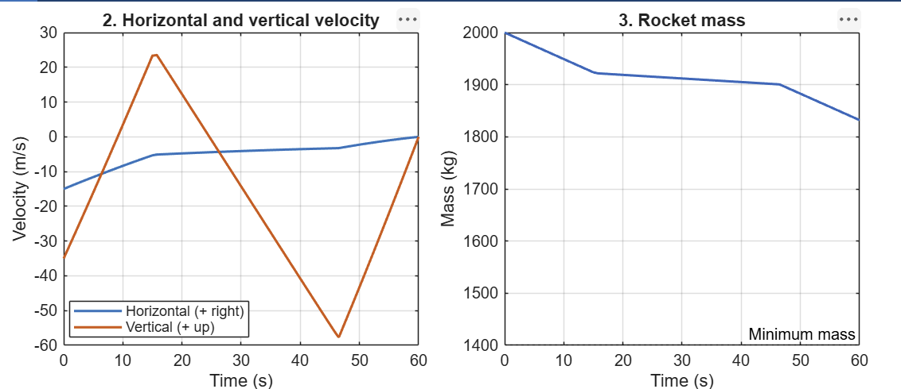
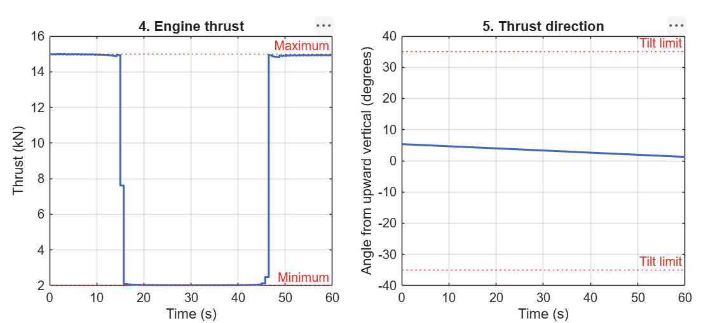
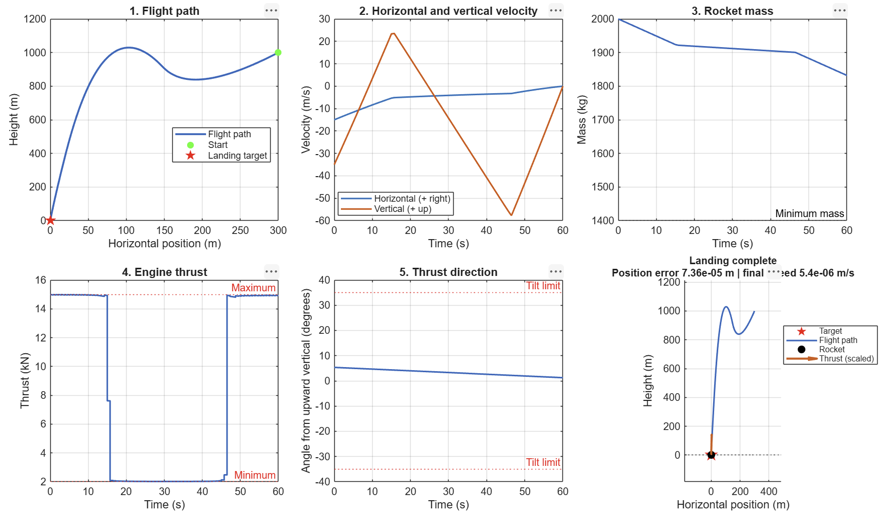

02 / Aerospace · Optimization
Fuel-Optimal Powered Descent Guidance
Developed a SpaceX-inspired, 2D powered-descent solver that selects thrust commands to minimize propellant use while reaching a landing target at zero velocity. Combined Python optimization with independent physical replay and MATLAB visualization.

The challenge
Compute a fuel-efficient landing while accounting for changing mass, engine limits, thrust direction, and an approach corridor. I modeled the final powered descent of a small lander under Mars-like gravity, using illustrative vehicle parameters inspired by reusable rocket landings.
My approach
I formulated a conservative second-order cone program in CVXPY and solved it with Clarabel. Thrust acceleration, logarithmic mass, and a helper variable made the variable-mass problem tractable, with a separate check for relaxation tightness.
The model uses exact position and velocity updates for constant acceleration within each interval. It enforces thrust bounds, a 35° tilt limit from vertical, a glide corridor, and a minimum remaining mass, including corridor constraints between trajectory nodes.
Validation & results
To check the landing plan, I used separate simulations in Python and MATLAB. They apply the engine commands and calculate the rocket’s motion and fuel use again, allowing me to compare the simulated flight with the solver’s prediction.
The 60-second example used about 168 kg of propellant. A shorter, 27-second case used about 90 kg and also passed the checks. The 26-second case did not pass. These results compare the flight times tested; they do not prove which duration uses the least fuel overall.
A result passes only if the simulated rocket finishes within 5 cm of the target, moves slower than 0.005 m/s at touchdown, and its calculated mass agrees with the solver’s prediction within 10 grams. I also check the engine limits and available propellant.
These checks measure agreement within the computer model. The model leaves out wind, air resistance, rocket rotation, and in-flight corrections, so the results do not represent real-world landing accuracy.
Visualization
The MATLAB display combines five plots with an animated landing tracker. The plots show flight path, velocity, mass, thrust, and thrust direction; the tracker shows time, height, speed, and mass. The tracker follows the simulated endpoint and uses a scaled arrow to show thrust direction.
The recording below shows the 60-second example running in MATLAB at 4× playback speed.
Skills applied
Mathematical modeling, variable-mass dynamics, convex optimization, numerical integration, Python/CVXPY, MATLAB, modular software design, and independent simulation checks.
Code
I reorganized the implementation into a main script and focused modules for parameters, optimization, validation, and export.
- Parameters & solver: input checks and the constrained CVXPY/Clarabel landing model.
- Validation & export: independent physical replay, acceptance checks, and export of the solution and numerical summary. Failed runs remove stale solution files.
- MATLAB: ode45 force-schedule replay, five diagnostic plots, and animated landing playback.
Developed with AI assistance and established numerical libraries; code organization was inspired by Niko Natsoulas’s LCVX PDG project.
Landing animation
60-second simulated descent at 4× playback speed. The orange arrow shows thrust force; the red star marks the landing target.
More photos
Results from the 60-second example. Select a plot to view it at full size.


